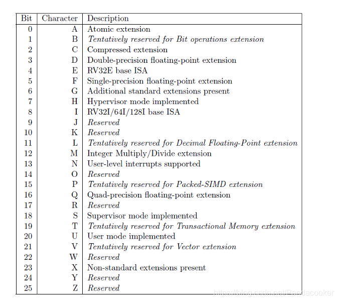
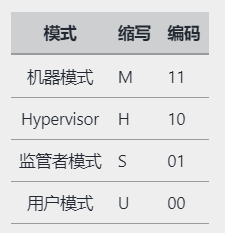
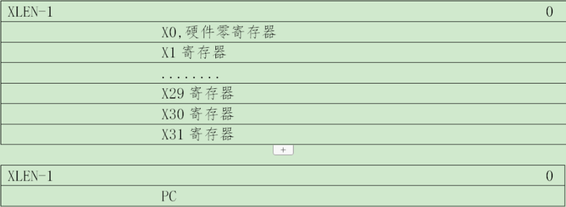
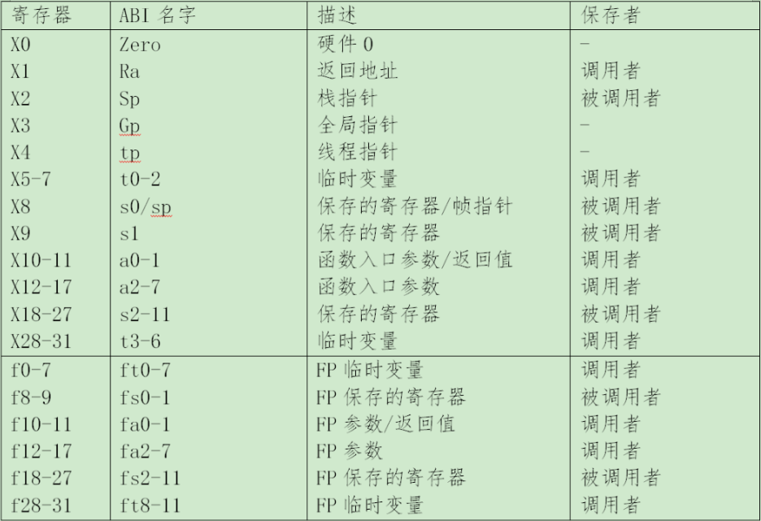
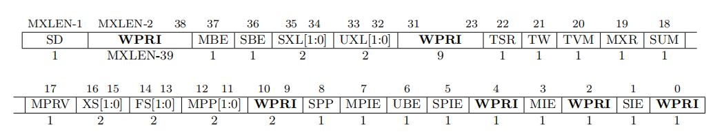
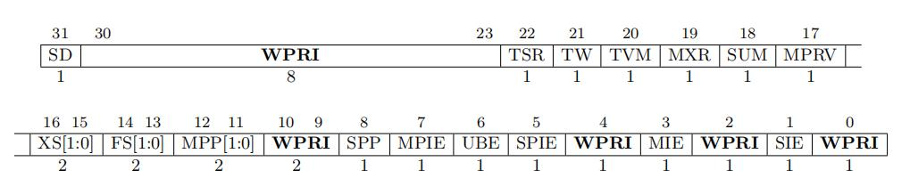
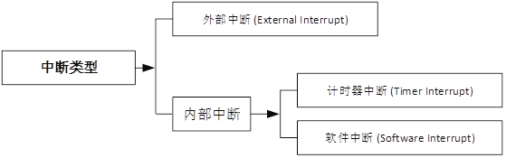
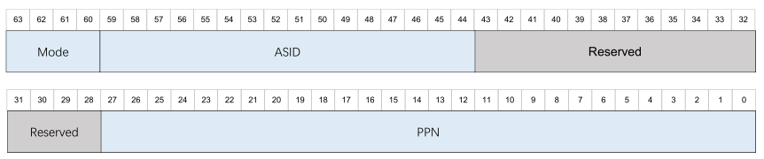
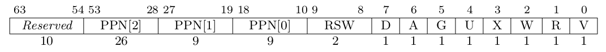
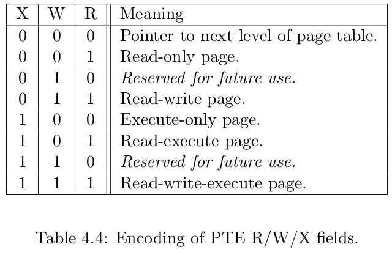

RISC-V架构移植
一、描述
RISC-V（发音为“risk-five”）是一个基于精简指令集（RISC）原则的开源指令集架构（ISA）。
与大多数指令集相比，RISC-V指令集可以自由地用于任何目的，允许任何人设计、制造和销售RISC-V芯片和软件。虽然这不是第一个开源指令集，但它具有重要意义，因为其设计使其适用于现代计算设备（如仓库规模云计算机、高端移动电话和微小嵌入式系统）。设计者考虑到了这些用途中的性能与功率效率。该指令集还具有众多支持的软件，这解决了新指令集通常的弱点。
该项目2010年始于加州大学伯克利分校，但许多贡献者是该大学以外的志愿者和行业工作者。 RISC-V指令集的设计考虑了小型、快速、低功耗的现实情况来实做，但并没有对特定的微架构做过度的设计。
截至2017年5月，RISC-V已经确立了版本2.22的用户空间的指令集(userspace ISA)，而特权指令集(privileged ISA)也处在草案版本1.10。
（以上摘自百度百科）
二、架构简述
1. 指令集
RISC-V被设计成可扩展的，可以配置的，根据不同的应用场景可以生产带有不同功能扩展的处理器。

2. 特权模式
RISC-V目前有4种特权模式（Machine, Hypervisor，Supervisor, User）。
机器模式用于固件程序代码执行，例如 OpenSBI, RustSBI 等，但是在 rtos 和裸机开发种，很多时候都是直接使用机器模式。
Hypervisor 虚拟化模式用于使用虚拟化的场景，目前还在开发阶段。
操作系统更多运行在 Supervisor 监管者模式，这样可以和 User 更贴近，也不用管太多机器模式需要做的事情。通常， OpenSBI 和 RustSBI 初始化完成后，会跳转到 Supervisor 模式，进入内核。内核只需要链接到 SBI 指定的地址就行了。使用 SBI 的好处是，可以直接使用串口的输入输出，很方便调试，不用自己从机器模式跳转到 Supervisor 模式，降低开发的复杂度。
User 用户模式就是应用程序执行的模式，需要通过系统调用进入到 Supervisor 模式去调用内核提供的服务。

3. 寄存器
RISCV(RV32)具有32个整数寄存器组(取名为：x0～x31)，其中31个是通用寄存器(x1～x31)，它们存储整数数值，寄存器x0是硬件连线的常数0。当你设计的RISCV架构处理器实现了浮点扩展时，还必须有32个浮点寄存器f0～f31。对于RV32，其x寄存器是32位宽度的，XLEN=32，对于RV64，它们是64位宽度的,XLEN=64。
 
特权级寄存器的命名规则，特权模式+寄存器名字，表示只能在该特权级使用。比如status寄存器，在机器模式有mstatus，监管模式有sstatus。

上图为机器模式状态寄存器（rv64）

上图为机器模式状态寄存器（rv32）
3. 中断管理
RISC-V中断分为两种类型，一种是同步中断，即ECALL、EBREAK等指令所产生的中断，另一种是异步中断，即GPIO、UART等外设产生的中断。
RISC-V的中断管理由处理器核局部中断CLINT（CoreLocalInterrupt）和平台级中断控制器PLIC（PlatformLevelInterruptController）组成。CLINT分为软件中断核计时器中断，负责响应处理器的异常核和计时器中断。PLIC负责处理外设的中断。

中断表地址需要写入管理者模式的向量基址寄存器 STVEC ，产生中断后，就去该寄存器保存的中断向量表地址找中断号对应的中断服务。
Supervisor模式的中断的打开与关闭是由状态寄存器 SSTATUS 中的 SIE 控制的，置为1则表示使能中断，置为0则表示禁用中断。
4. MMU内存管理单元
RISC-V的MMU支持多种模式，有Sv32/Sv39/Sv48/Sv57/Sv64等。不同的模式映射的页面等级，页面大小是有差异的。在64位处理器种最常用的是Sv39，它是3级4KB页面大小映射。
三、代码移植
移植一个新的平台需要实现如下内容： |内容 |描述 | | ------- | ---------- | | 内核入口 | 不同的架构内核入口代码有差异，需要根据架构来实现 | | 平台初始化 | 调用平台的初始化代码 | | 原子操作 | 原子操作用于对数据的加减运算不会被打断，以及一些原子级别的数据交换等 | | 内存屏障 | 内存屏障前的所有读写操作完成后才能执行屏障后的读写操作 | | 计时器时钟 | 计时器时钟用于驱动多线程的切换和内核定时器 | | 线程上下文 | 上下文切换是多线程实现的根基 | | 中断管理 | 中断管理接口对内核以及驱动都是至关重要的 | | MMU虚拟内存管理 | 虚拟地址的实现和访问，MMU的切换，映射和解除页面映射 | | 进程管理 | 进程管理相关操作是实现进程的必要条件 | | SMP多核 | 对处理器多核的启动和初始化 |
所有需要对接的接口都存放在 src/arch/riscv64/port 目录下面，新的平台只需要支持这些接口的功能即可。
1. 内核入口
在 nxos 中，使用了 OpenSBI 和 RustSBI 作为机器模式的固件，qemu_riscv64平台选择了 OpenSBI ，其内核的入口地址为 0x80200000，
k210 选择了 RustSBI，其内核的入口地址为 0x80020000， RustSBI 针对 k210 做了一些兼容，使用起来比较简单。
在 SBI 执行结束后，会从机器模式跳转到位于监护者模式的内核中，并且寄存器 a0 记录了当前处理器核心的 id ，可以根据寄存器的值来判断处理器 id。
入口地址在链接脚本中写的是 _Start 这个符号，因此会进入 sbi_entry.S 的 _Start 执行。
- 文件：src/arch/riscv64/kernel/sbi_entry.S
/**
* Copyright (c) 2018-2022, NXOS Development Team
* SPDX-License-Identifier: Apache-2.0
*
* Contains: Riscv64 entry
*
* Change Logs:
* Date Author Notes
* 2021-10-1 JasonHu Init
*/
.section .text.start
.extern NX_Main
.globl CPU_StackTop0
.globl CPU_StackTop1
.globl CPU_StackTop2
.globl CPU_StackTop3
.global _Start
_Start:
li t0, 0
beq a0, t0, _SetSP0
li t0, 1
beq a0, t0, _SetSP1
li t0, 2
beq a0, t0, _SetSP2
li t0, 3
beq a0, t0, _SetSP3
j _EnterMain
_SetSP0:
la sp, CPU_StackTop0
j _EnterMain
_SetSP1:
la sp, CPU_StackTop1
j _EnterMain
_SetSP2:
la sp, CPU_StackTop2
j _EnterMain
_SetSP3:
la sp, CPU_StackTop3
j _EnterMain
_EnterMain:
csrw sscratch, sp /* first set sscrach as cpu stack here */
csrc sstatus, 0x2 /* disable interrupt */
call NX_Main
loop:
j loop
/* set in data seciton, avoid clear bss to clean stack */
.section .data.stack
.align 12
CPU_Stack0:
.space 8192
CPU_StackTop0:
CPU_Stack1:
.space 8192
CPU_StackTop1:
CoreStack2:
.space 8192
CPU_StackTop2:
CoreStack3:
.space 8192
CPU_StackTop3:
该代码简单地设置了栈就进入了 NX_Main 执行，那么入口程序的移植就完成了。
2. 平台初始化
在平台初始化 NX_HalPlatformInit 中，进行初始化，初始化完串口后，就能使用打印功能了。
然后再初始化中断，初始化物理内存管理。
在 NX_HalPlatformStage2中，可以使用内核的功能，内存分配，中断注册等。
因此 NX_HalDirectUartStage2 就注册了串口中断，可以接受输入。
- 文件：src/platform/qemu_riscv64/hal/init.c
/**
* Copyright (c) 2018-2022, NXOS Development Team
* SPDX-License-Identifier: Apache-2.0
*
* Contains: Init Riscv64 Qemu platfrom
*
* Change Logs:
* Date Author Notes
* 2021-10-1 JasonHu Init
*/
#include <xbook.h>
#include <trap.h>
#include <clock.h>
#include <page_zone.h>
#include <platform.h>
#include <plic.h>
#include <sbi.h>
#include <regs.h>
#include <drivers/direct_uart.h>
#include <sched/smp.h>
#include <utils/log.h>
#define NX_LOG_LEVEL NX_LOG_INFO
#define NX_LOG_NAME "INIT"
#include <xbook/debug.h>
NX_INTERFACE NX_Error NX_HalPlatformInit(NX_UArch coreId)
{
NX_HalClearBSS();
/* NOTE: init trap first before do anything */
CPU_InitTrap(coreId);
NX_HalDirectUartInit();
sbi_init();
sbi_print_version();
NX_LOG_I("Hello, QEMU Riscv64!");
PLIC_Init(NX_True);
NX_HalPageZoneInit();
return NX_EOK;
}
NX_INTERFACE NX_Error NX_HalPlatformStage2(void)
{
NX_LOG_I("stage2!");
NX_HalDirectUartStage2();
return NX_EOK;
}
串口可以配置为调用 SBI 实现输出，也可以通过自己操作寄存器实现。在早期，调用 SBI 串口来输出是非常方便的。
实现 NX_HalConsoleOutChar 函数后，就可以使用 NX_Printf 和 NX_LOG_* 函数来打印消息。
- 文件：src/platform/qemu_riscv64/drivers/direct_uart.c
/**
* Copyright (c) 2018-2022, NXOS Development Team
* SPDX-License-Identifier: Apache-2.0
*
* Contains: Direct uart driver
* low-level driver routines for 16550a UART.
*
* Change Logs:
* Date Author Notes
* 2021-10-1 JasonHu Init
*/
#include <xbook.h>
#include <io/delay_irq.h>
#include <drivers/direct_uart.h>
#include <utils/log.h>
#include <xbook/debug.h>
#ifdef CONFIG_NX_UART0_FROM_SBI
#include <sbi.h>
#endif
#include <regs.h>
// the UART control registers.
// some have different meanings for
// read vs write.
// see http://byterunner.com/16550.html
#define RHR 0 // receive holding register (for input bytes)
#define THR 0 // transmit holding register (for output bytes)
#define IER 1 // interrupt enable register
#define IER_RX_ENABLE (1 << 0) // receiver ready interrupt.
#define IER_TX_ENABLE (1 << 1) // transmitter empty interrupt.
#define FCR 2 // FIFO control register
#define FCR_FIFO_ENABLE (1 << 0)
#define FCR_FIFO_CLEAR (3 << 1) // clear the content of the two FIFOs
#define ISR 2 // interrupt status register
#define LCR 3 // line control register
#define LCR_EIGHT_BITS (3 << 0)
#define LCR_BAUD_LATCH (1 << 7) // special mode to set baud rate
#define LSR 5 // line status register
#define LSR_RX_READY (1 << 0) // input is waiting to be read from RHR
#define LSR_TX_IDLE (1 << 5) // THR can accept another character to send
void NX_HalDirectUartPutc(char ch)
{
#ifdef CONFIG_NX_UART0_FROM_SBI
sbi_console_putchar(ch);
#else
if ((Read8(UART0_PHY_ADDR + LSR) & LSR_TX_IDLE) == 0)
{
// the UART transmit holding register is full,
return;
}
Write8(UART0_PHY_ADDR + THR, ch);
#endif
}
int NX_HalDirectUartGetc(void)
{
#ifdef CONFIG_NX_UART0_FROM_SBI
return sbi_console_getchar();
#else
if (Read8(UART0_PHY_ADDR + LSR) & 0x01)
{
// input data is ready.
return Read8(UART0_PHY_ADDR + RHR);
}
else
{
return -1;
}
#endif
}
NX_INTERFACE void NX_HalConsoleOutChar(char ch)
{
NX_HalDirectUartPutc(ch);
}
void NX_HalDirectUartInit(void)
{
// disable interrupts.
Write8(UART0_PHY_ADDR + IER, 0x00);
// special mode to set baud rate.
Write8(UART0_PHY_ADDR + LCR, LCR_BAUD_LATCH);
// LSB for baud rate of 115.2K.
Write8(UART0_PHY_ADDR + 0, 0x01);
// MSB for baud rate of 115.2K.
Write8(UART0_PHY_ADDR + 1, 0x00);
// leave set-baud mode,
// and set word length to 8 bits, no parity.
Write8(UART0_PHY_ADDR + LCR, LCR_EIGHT_BITS);
// reset and enable FIFOs.
Write8(UART0_PHY_ADDR + FCR, FCR_FIFO_ENABLE | FCR_FIFO_CLEAR);
}
/**
* default handler
*/
NX_WEAK_SYM void NX_HalDirectUartGetcHandler(char data)
{
NX_LOG_I("Deafult uart handler:%x/%c\n", data, data);
}
NX_PRIVATE NX_Error UartIrqHandler(NX_IRQ_Number irqno, void *arg)
{
int data = NX_HalDirectUartGetc();
if (data != -1)
{
if (NX_HalDirectUartGetcHandler != NX_NULL)
{
NX_HalDirectUartGetcHandler(data);
}
}
return data != -1 ? NX_EOK : NX_EIO;
}
void NX_HalDirectUartStage2(void)
{
/* enable receive interrupts. */
Write8(UART0_PHY_ADDR + IER, IER_RX_ENABLE);
NX_ASSERT(NX_IRQ_Bind(UART0_IRQ, UartIrqHandler, NX_NULL, "Uart", 0) == NX_EOK);
NX_ASSERT(NX_IRQ_Unmask(UART0_IRQ) == NX_EOK);
}
3. 原子操作
原子操作需要实现对数据的原子设置，获取，加法，减法，数据交换等。由于 gcc 内置了原子操作的函数，
这里只需要调用 gcc 内置的原子操作即可。
- 文件：src/arch/riscv64/port/atomic.c
/**
* Copyright (c) 2018-2022, NXOS Development Team
* SPDX-License-Identifier: Apache-2.0
*
* Contains: HAL NX_Atomic
*
* Change Logs:
* Date Author Notes
* 2021-12-1 JasonHu Init
*/
#include <xbook/atomic.h>
NX_PRIVATE void NX_HalAtomicSet(NX_Atomic *atomic, long value)
{
atomic->value = value;
}
NX_PRIVATE long NX_HalAtomicGet(NX_Atomic *atomic)
{
return atomic->value;
}
NX_PRIVATE void NX_HalAtomicAdd(NX_Atomic *atomic, long value)
{
/* gcc build-in functions */
__sync_fetch_and_add(&atomic->value, value);
}
NX_PRIVATE void NX_HalAtomicSub(NX_Atomic *atomic, long value)
{
__sync_fetch_and_sub(&atomic->value, value);
}
NX_PRIVATE void NX_HalAtomicInc(NX_Atomic *atomic)
{
__sync_fetch_and_add(&atomic->value, 1);
}
NX_PRIVATE void NX_HalAtomicDec(NX_Atomic *atomic)
{
__sync_fetch_and_sub(&atomic->value, 1);
}
NX_PRIVATE void NX_HalAtomicSetMask(NX_Atomic *atomic, long mask)
{
__sync_fetch_and_or(&atomic->value, mask);
}
NX_PRIVATE void NX_HalAtomicClearMask(NX_Atomic *atomic, long mask)
{
__sync_fetch_and_and(&atomic->value, ~mask);
}
NX_PRIVATE long NX_HalAtomicSwap(NX_Atomic *atomic, long newValue)
{
return __sync_lock_test_and_set(&((atomic)->value), newValue);
}
NX_PRIVATE long NX_HalAtomicCAS(NX_Atomic *atomic, long old, long newValue)
{
return __sync_val_compare_and_swap(&atomic->value, old, newValue);
}
NX_INTERFACE struct NX_AtomicOps NX_AtomicOpsInterface =
{
.set = NX_HalAtomicSet,
.get = NX_HalAtomicGet,
.add = NX_HalAtomicAdd,
.sub = NX_HalAtomicSub,
.inc = NX_HalAtomicInc,
.dec = NX_HalAtomicDec,
.setMask = NX_HalAtomicSetMask,
.clearMask = NX_HalAtomicClearMask,
.swap = NX_HalAtomicSwap,
.cas = NX_HalAtomicCAS,
};
4. 内存屏障
在 risc-v 架构中，内存全（读和写）屏障使用 gcc 内置函数 __sync_synchronize 实现，
内存读/写屏障使用 fence 指令去实现。内存指令屏障使用 fence.i 指令实现。
- 文件：src/arch/riscv64/port/barrier.c
/**
* Copyright (c) 2018-2022, NXOS Development Team
* SPDX-License-Identifier: Apache-2.0
*
* Contains: HAL Memory Barrier
*
* Change Logs:
* Date Author Notes
* 2021-12-9 JasonHu Init
*/
#include <mm/barrier.h>
NX_PRIVATE void NX_HalMemBarrier(void)
{
__sync_synchronize();
}
NX_PRIVATE void NX_HalMemBarrierRead(void)
{
NX_CASM("fence":::"memory");
}
NX_PRIVATE void NX_HalMemBarrierWrite(void)
{
NX_CASM("fence":::"memory");
}
NX_PRIVATE void NX_HalMemBarrierInstruction(void)
{
NX_CASM("fence.i":::"memory");
}
NX_INTERFACE struct NX_MemBarrierOps NX_MemBarrierOpsInterface =
{
.barrier = NX_HalMemBarrier,
.barrierRead = NX_HalMemBarrierRead,
.barrierWrite = NX_HalMemBarrierWrite,
.barrierInstruction = NX_HalMemBarrierInstruction,
};
5. 计时器时钟
硬件时钟会按照一定的频率去增长当前定时器寄存器的值，在 qemu 中这个频率是 10MHZ 。
如果当前定时器的值超过了超时定时器寄存器的值的时候，就会触发一个中断。注意：前提是打开了定时器中断。
在做时钟定时器初始化的时候，需要先关闭 Supervisor 模式的定时器中断，然后再设置超时定时器的值。
这是操作需要通过 SBI 去实现，而获取操作可以直接通过 rdtime 指令获取。
由于我们想实现1秒钟产生 NX_TICKS_PER_SECOND （一般在100~1000）次定时器中断的效果，
所以需要计算出产生一次中断，需要间隔多少个tick即可。
当超时后，就会产生一个中断，于是就设置下一个中断产生时的超时值。
- 文件：src/arch/riscv64/port/clock.c
/**
* Copyright (c) 2018-2022, NXOS Development Team
* SPDX-License-Identifier: Apache-2.0
*
* Contains: Clock for system
*
* Change Logs:
* Date Author Notes
* 2021-10-16 JasonHu Init
*/
#include <time/clock.h>
#include <io/irq.h>
#include <io/delay_irq.h>
#include <clock.h>
#include <regs.h>
#include <sbi.h>
#define NX_LOG_NAME "Clock"
#include <utils/log.h>
#define NX_TIMER_CLK_FREQ 10000000 /* qemu has 10MHZ clock frequency */
NX_PRIVATE NX_U64 TickDelta = NX_TIMER_CLK_FREQ / NX_TICKS_PER_SECOND;
NX_PRIVATE NX_U64 GetTimerCounter()
{
NX_U64 ret;
NX_CASM ("rdtime %0" : "=r"(ret));
return ret;
}
void NX_HalClockHandler(void)
{
NX_ClockTickGo();
/* update timer */
sbi_set_timer(GetTimerCounter() + TickDelta);
}
NX_INTERFACE NX_Error NX_HalInitClock(void)
{
/* Clear the Supervisor-Timer bit in SIE */
ClearCSR(sie, SIE_STIE);
/* Set timer */
sbi_set_timer(GetTimerCounter() + TickDelta);
/* Enable the Supervisor-Timer bit in SIE */
SetCSR(sie, SIE_STIE);
return NX_EOK;
}
6. 线程上下文
上下文的切换分为上下文的初始化，从当前线程切换到下一个线程，直接切换到下一个线程。
初始化线程上下文是在栈上构建一个线程的上下文，当第一次切换到该线程的时候，寄存器就会使用栈中的值。
在函数 NX_HalContextInit 中，需要构建的上下文参数是线程的入口 startEntry 和线程结束时执行的函数 exitEntry，
以及线程运行时的参数 arg ，以及将这些数据构建在栈顶 stackTop 之下，最后返回栈低。
预留一个上下文空间后，设置参数为 a0 ，因为risc-v中c语言函数参数是 a0~a7 。
入口地址使用 epc 保存，因为上下文切换的时候会模拟一次异常返回，返回后就到这个异常地址处执行。
结束时执行的函数使用 ra 保存，它是返回地址的意思，表示线程返回后就去执行该函数。
线程栈使用 sp 寄存器保存。
还有一个很重要的地方就是对状态寄存器 sstatus 的设置，
需要能够访问用户态的内存，需要在返回后开启中断以及设置为 Supervisor 模式（因为线程的切换是在内核中完成的）。
- 文件：src/arch/riscv64/port/context.c
/**
* Copyright (c) 2018-2022, NXOS Development Team
* SPDX-License-Identifier: Apache-2.0
*
* Contains: NX_Thread context
*
* Change Logs:
* Date Author Notes
* 2021-10-16 JasonHu Init
*/
#include <sched/context.h>
#include <utils/memory.h>
#include <utils/log.h>
#include <io/irq.h>
#include <context.h>
#include <regs.h>
NX_IMPORT void NX_HalContextSwitchNext(NX_Addr nextSP);
NX_IMPORT void NX_HalContextSwitchPrevNext(NX_Addr prevSP, NX_Addr nextSP);
NX_PRIVATE void *NX_HalContextInit(void *startEntry, void *exitEntry, void *arg, void *stackTop)
{
NX_U8 *stack = NX_NULL;
NX_HalContext *context = NX_NULL;
stack = (NX_U8 *)stackTop;
stack = (NX_U8 *)NX_ALIGN_DOWN((NX_UArch)stack, sizeof(NX_UArch));
stack -= sizeof(NX_HalContext);
context = (NX_HalContext *)stack;
NX_MemZero(context, sizeof(NX_HalContext));
context->a0 = (NX_UArch)arg;
context->epc = (NX_UArch)startEntry;
context->sp = (NX_UArch)(((NX_UArch)stack) + sizeof(NX_HalContext));
context->ra = (NX_UArch)exitEntry;
/**
* allow to access user space memory,
* return to supervisor mode,
* enable interrupt
*/
#ifdef CONFIG_NX_PLATFORM_K210
/* NOTICE: in k210, SSTATUS_SUM mean disable Supervisor Access User memroy */
context->sstatus = SSTATUS_SPP | SSTATUS_SPIE;
#else
context->sstatus = SSTATUS_SUM | SSTATUS_SPP | SSTATUS_SPIE;
#endif
return (void *)stack;
}
NX_INTERFACE struct NX_ContextOps NX_ContextOpsInterface =
{
.init = NX_HalContextInit,
.switchNext = NX_HalContextSwitchNext,
.switchPrevNext = NX_HalContextSwitchPrevNext,
};
在上下文切换的时候，需要注意的是，传入的是线程的栈的地址，可以从地址中取出线程当前栈的值。 使用这种方式的话，就非常方便移植到其它架构上。
在 NX_HalContextSwitchNext 中，获取了栈的值后，就从栈中恢复寄存器上下文，然后调用 sret 返回。
由于 epc 设置了线程的入口地址，那么 sret 返回后就可以让 pc 等于 epc ，那么就切换到线程里面去了。
至于在 NX_HalContextSwitchPrevNext 中，多了对当前线程的上下文的保存的工作，然后切换到下一个线程。
- 文件：src/arch/riscv64/kernel/context.S
/**
* Copyright (c) 2018-2022, NXOS Development Team
* SPDX-License-Identifier: Apache-2.0
*
* Contains: NX_Thread context
*
* Change Logs:
* Date Author Notes
* 2021-12-01 JasonHu Init
*/
.text
#define __ASSEMBLY__
#include <context.h>
#include <regs.h>
/**
* void NX_HalContextSwitchNext(NX_Addr nextSP);
*/
.globl NX_HalContextSwitchNext
NX_HalContextSwitchNext:
LOAD sp, (a0) /* sp = *nextSP */
RESTORE_CONTEXT
sret
/**
* void NX_HalContextSwitchPrevNext(NX_Addr prevSP, NX_Addr nextSP);
*/
.globl NX_HalContextSwitchPrevNext
NX_HalContextSwitchPrevNext:
mv t0, sp
/**
* set as supervisor mode and enable interupt
* make sure kernel mode thread do context switch
*/
li t1, SSTATUS_SPP | SSTATUS_SPIE | SSTATUS_SUM
csrs sstatus, t1
/**
* set `sepc` as `ra`, `ra` saved return address of NX_HalContextSwitchPrevNext
* when do `sret`, will return from NX_HalContextSwitchPrevNext
*/
csrw sepc, ra
/* save context to stack */
SAVE_CONTEXT
/* save old sp to stack, instead the sp in sscratch */
STORE t0, CTX_SP_OFF * REGBYTES(sp)
/* save sp to from thread, *from = `sp` */
STORE sp, (a0)
LOAD sp, (a1) /* sp = *nextSP */
/* restore context from stack */
RESTORE_CONTEXT
/* supervisor return, `pc` = `sepc` */
sret
7. 中断管理
在中断中，使能 NX_HalIrqEnable 和禁用 NX_HalIrqDisable 中断只需要对 sstatus 寄存器的 SSTATUS_SIE 位做置位和清理的操作即可。
除此之外，还提供了对当前中断状态保存和恢复的操作 NX_HalIrqSaveLevel 和 NX_HalIrqRestoreLevel。
该操作只是多了对 sstatus 寄存器的 SSTATUS_SIE 位保存和恢复。
除此之外就是对某个中断的使能 NX_HalIrqUnmask 和禁用 NX_HalIrqMask ，以及中断处理完后的应答处理 NX_HalIrqAck。
这3个接口都是对 PLIC 的封装。
- 文件：src/arch/riscv64/port/interrupt.c
/**
* Copyright (c) 2018-2022, NXOS Development Team
* SPDX-License-Identifier: Apache-2.0
*
* Contains: interrupt manage
*
* Change Logs:
* Date Author Notes
* 2021-10-31 JasonHu Init
*/
#include <xbook.h>
#include <regs.h>
#include <io/irq.h>
#include <plic.h>
#include <sched/smp.h>
NX_PRIVATE NX_Error NX_HalIrqUnmask(NX_IRQ_Number irqno)
{
if (irqno < 0 || irqno >= NX_NR_IRQS)
{
return NX_EINVAL;
}
return PLIC_EnableIRQ(NX_SMP_GetBootCore(), irqno);
}
NX_PRIVATE NX_Error NX_HalIrqMask(NX_IRQ_Number irqno)
{
if (irqno < 0 || irqno >= NX_NR_IRQS)
{
return NX_EINVAL;
}
return PLIC_DisableIRQ(NX_SMP_GetBootCore(), irqno);
}
NX_PRIVATE NX_Error NX_HalIrqAck(NX_IRQ_Number irqno)
{
if (irqno < 0 || irqno >= NX_NR_IRQS)
{
return NX_EINVAL;
}
return PLIC_Complete(NX_SMP_GetBootCore(), irqno);
}
NX_PRIVATE void NX_HalIrqEnable(void)
{
WriteCSR(sstatus, ReadCSR(sstatus) | SSTATUS_SIE);
}
NX_PRIVATE void NX_HalIrqDisable(void)
{
WriteCSR(sstatus, ReadCSR(sstatus) & ~SSTATUS_SIE);
}
NX_PRIVATE NX_UArch NX_HalIrqSaveLevel(void)
{
NX_UArch level = 0;
level = ReadCSR(sstatus);
WriteCSR(sstatus, level & ~SSTATUS_SIE);
return level & SSTATUS_SIE;
}
NX_PRIVATE void NX_HalIrqRestoreLevel(NX_UArch level)
{
WriteCSR(sstatus, ReadCSR(sstatus) | (level & SSTATUS_SIE));
}
NX_INTERFACE NX_IRQ_Controller NX_IRQ_ControllerInterface =
{
.unmask = NX_HalIrqUnmask,
.mask = NX_HalIrqMask,
.ack = NX_HalIrqAck,
.enable = NX_HalIrqEnable,
.disable = NX_HalIrqDisable,
.saveLevel = NX_HalIrqSaveLevel,
.restoreLevel = NX_HalIrqRestoreLevel,
};
8. MMU虚拟内存管理
目前支持的是mmu-sv39，3级页表，页表和物理页都是4kb大小。
NX_HalMapPage 是映射虚拟地址，会自动分配物理地址并映射页面。
NX_HalMapPageWithPhy 映射虚拟地址，但是会指定物理地址，就不用自动分配物理地址了。
NX_HalUnmapPage 解除地址映射，解除后就不能访问了。
NX_HalVir2Phy 可以通过虚拟地址找到其映射的物理地址。
NX_HalSetPageTable 设置页表的地址到硬件寄存器中，当访问虚拟地址的时候，会根据设置的页表进行地址转换。
NX_HalGetPageTable 可以获取页表的地址。
NX_HalEnable 是使能 MMU ，所有地址都变成虚拟地址了。
- 文件：src/arch/riscv64/port/mmu.c
NX_PRIVATE void *NX_HalMapPage(NX_Mmu *mmu, NX_Addr virAddr, NX_Size size, NX_UArch attr)
{
NX_ASSERT(mmu);
if (!attr)
{
return NX_NULL;
}
virAddr = virAddr & NX_PAGE_ADDR_MASK;
size = NX_PAGE_ALIGNUP(size);
NX_UArch level = NX_IRQ_SaveLevel();
void *addr = __MapPage(mmu, virAddr, size, attr);
NX_IRQ_RestoreLevel(level);
return addr;
}
NX_PRIVATE void *NX_HalMapPageWithPhy(NX_Mmu *mmu, NX_Addr virAddr, NX_Addr phyAddr, NX_Size size, NX_UArch attr)
{
NX_ASSERT(mmu);
if (!attr)
{
return NX_NULL;
}
virAddr = virAddr & NX_PAGE_ADDR_MASK;
phyAddr = phyAddr & NX_PAGE_ADDR_MASK;
size = NX_PAGE_ALIGNUP(size);
NX_UArch level = NX_IRQ_SaveLevel();
void *addr = __MapPageWithPhy(mmu, virAddr, phyAddr, size, attr);
NX_IRQ_RestoreLevel(level);
return addr;
}
NX_PRIVATE NX_Error NX_HalUnmapPage(NX_Mmu *mmu, NX_Addr virAddr, NX_Size size)
{
NX_ASSERT(mmu);
virAddr = virAddr & NX_PAGE_ADDR_MASK;
size = NX_PAGE_ALIGNUP(size);
NX_Addr addrStart = virAddr;
NX_Addr addrEnd = virAddr + size - 1;
NX_Size pages = GET_PF_ID(addrEnd) - GET_PF_ID(addrStart) + 1;
NX_UArch level = NX_IRQ_SaveLevel();
NX_Error err = __UnmapPage(mmu, virAddr, pages);
NX_IRQ_RestoreLevel(level);
return err;
}
NX_PRIVATE void *NX_HalVir2Phy(NX_Mmu *mmu, NX_Addr virAddr)
{
NX_ASSERT(mmu);
NX_Addr pagePhy;
NX_Addr pageOffset;
MMU_PDE *pageTable = (MMU_PDE *)mmu->table;
MMU_PTE *pte = PageWalk(pageTable, virAddr, NX_False);
if (pte == NX_NULL)
{
NX_PANIC("vir2phy walk fault!");
}
if (!PTE_USED(*pte))
{
NX_PANIC("vir2phy pte not used!");
}
pagePhy = PTE2PADDR(*pte);
pageOffset = virAddr % NX_PAGE_SIZE;
return (void *)(pagePhy + pageOffset);
}
NX_PRIVATE void NX_HalSetPageTable(NX_Addr addr)
{
WriteCSR(satp, MAKE_SATP(addr));
MMU_FlushTLB();
}
NX_PRIVATE NX_Addr NX_HalGetPageTable(void)
{
NX_Addr addr = ReadCSR(satp);
return (NX_Addr)GET_ADDR_FROM_SATP(addr);
}
NX_PRIVATE void NX_HalEnable(void)
{
MMU_FlushTLB();
}
NX_INTERFACE struct NX_MmuOps NX_MmuOpsInterface =
{
.setPageTable = NX_HalSetPageTable,
.getPageTable = NX_HalGetPageTable,
.enable = NX_HalEnable,
.mapPage = NX_HalMapPage,
.mapPageWithPhy = NX_HalMapPageWithPhy,
.unmapPage = NX_HalUnmapPage,
.vir2Phy = NX_HalVir2Phy,
};
监管者模式的页表的地址是由地址转换寄存器 SATP 保存的，其格式如下：

具体字段的解析如下：
- Mode - MMU 地址翻译模式
| Value | Name | Description |
|---|---|---|
| 0 | Bare | No translation or protection |
| 1-7 | - | Reserved |
| 8 | Sv39 | Page-based 39-bit virtual addressing |
| 9 | Sv48 | Page-based 48-bit virtual addressing |
| 10 | Sv57 | Reserved for page-based 57-bit virtual addressing |
| 11 | Sv64 | Reserved for page-based 64-bit virtual addressing |
| 12-15 | - | Reserved |
当 Mode 为 0 时，MMU 关闭。
- ASID – 当前 ASID。表示当前程序的 ASID 号。
- PPN – 硬件回填根 PPN。第一级硬件回填使用的 PPN (Phsical Page Number)。
接下来，我们给出 SV39 地址转换的全过程图示（来源于 MIT 6.828 课程）来介绍多级页表原理的介绍：

在 SV39 模式中我们采用三级页表，即将 27 位的虚拟页号分为三个等长的部分，
第 26-18 位为三级索引 VPN2，第 17-9 位为二级索引 VPN1，第 8-0 位为一级索引 VPN0。
我们也将页表分为三级页表，二级页表，一级页表。
每个页表都用 9 位索引的，因此有 2的9次方=512 个页表项，
而每个页表项都是 8 字节，
因此每个页表大小都为 512 x 8 = 4KiB 。
正好是一个物理页的大小。
我们可以把一个页表放到一个物理页中，并用一个物理页号来描述它。
事实上，三级页表的每个页表项中的物理页号可描述一个二级页表；
二级页表的每个页表项中的物理页号可描述一个一级页表；
一级页表中的页表项内容则和我们刚才提到的页表项一样，其内容包含物理页号，即描述一个要映射到的物理页。
具体来说，假设我们有虚拟地址 (VPN2,VPN1,VPN0,offset) :
我们首先会记录装载「当前所用的三级页表的物理页」的页号到
satp寄存器中；把
VPN2作为偏移在第三级页表的物理页中找到第二级页表的物理页号；把
VPN1作为偏移在第二级页表的物理页中找到第一级页表的物理页号；把
VPN0作为偏移在第一级页表的物理页中找到要访问位置的物理页号；物理页号对应的物理页基址（即物理页号左移12位）加上 就是虚拟地址对应的物理地址。
这样处理器通过这种多次转换，终于从虚拟页号找到了一级页表项，
从而得出了物理页号和虚拟地址所对应的物理地址。
刚才我们提到若页表项满足 R,W,X 都为 0，表明这个页表项指向下一级页表。
在这里三级和二级页表项的 R,W,X 为 0 应该成立，因为它们指向了下一级页表。
页面属性的定义如下：
- 文件：src/arch/riscv64/include/arch/mmu.h
// page table entry (PTE) fields
#define PTE_V 0x001 // Valid
#define PTE_R 0x002 // Read
#define PTE_W 0x004 // Write
#define PTE_X 0x008 // Execute
#define PTE_U 0x010 // User
#define PTE_G 0x020 // Global
#define PTE_A 0x040 // Accessed
#define PTE_D 0x080 // Dirty
#define PTE_SOFT 0x300 // Reserved for Software
#define PTE_S 0x000 // system
#define NX_PAGE_ATTR_RWX (PTE_X | PTE_W | PTE_R)
#define NX_PAGE_ATTR_KERNEL (PTE_V | NX_PAGE_ATTR_RWX | PTE_S | PTE_G)
#define NX_PAGE_ATTR_USER (PTE_V | NX_PAGE_ATTR_RWX | PTE_U | PTE_G)
在 NX_HalMapPage 中调用了 __MapPage 。__MapPage 会先计算需要映射的页面数量，然后循环映射页面。
由于每个虚拟地址都需要有一个对应的物理地址，因此调用物理页面分配函数 NX_PageAlloc 来分配页面。然后调用 MapOnePage 来映射一个页面。
NX_PRIVATE void *__MapPage(NX_Mmu *mmu, NX_Addr virAddr, NX_Size size, NX_UArch attr)
{
NX_Addr addrStart = virAddr;
NX_Addr addrEnd = virAddr + size - 1;
NX_SSize pages = GET_PF_ID(addrEnd) - GET_PF_ID(addrStart) + 1;
NX_Size mappedPages = 0;
void *phyAddr;
while (pages > 0)
{
phyAddr = NX_PageAlloc(1);
if (phyAddr == NX_NULL)
{
NX_LOG_E("map page: alloc page failed!");
goto err;
}
if (MapOnePage(mmu, virAddr, (NX_Addr)phyAddr, attr) != NX_EOK)
{
NX_LOG_E("map page: vir:%p phy:%p attr:%x failed!", virAddr, phyAddr, attr);
goto err;
}
virAddr += NX_PAGE_SIZE;
phyAddr += NX_PAGE_SIZE;
pages--;
mappedPages++;
}
return (void *)addrStart;
err:
if (phyAddr != NX_NULL)
{
NX_PageFree(phyAddr);
}
__UnmapPage(mmu, addrStart, mappedPages);
return NX_NULL;
}
在 MapOnePage 中，会先检测该地址是否已经映射，没有映射才能映射。
需要调用一个最为核心的函数，就是 PageWalk。
它会根据虚拟地址来做页表遍历，如果 allocPage 为假，那么在遍历过程中，某个等级的页表不存在就会返回空。
这就意味着这个地址是没有映射。
如果 allocPage 为真，那么就会在遍历过程中分配不存在的页表。
例如在页目录表中，会有页表项，如果发现该页表项为空，则会分配一个物理页，作为下一级的页表。
该函数最后返回的是 VPN0 的页表项，页表项存放了物理页的地址。
在 MapOnePage 中，allocPage 为真，那就意味着如果虚拟地址没有映射物理地址，就会一级一级地分配页表。
返回 pte 后，需要填写也表项，其内容是物理地址和页面的属性R,W,X等。
页表项格式如下：

物理页的属性如下：

NX_PRIVATE MMU_PTE *PageWalk(MMU_PDE *pageTable, NX_Addr virAddr, NX_Bool allocPage)
{
NX_ASSERT(pageTable);
/* The page table in sv39 mode has 3 levels */
int level;
for (level = 2; level > 0; level--)
{
MMU_PTE *pte = &pageTable[GET_LEVEL_OFF(level, virAddr)];
if (PTE_USED(*pte))
{
pageTable = (MMU_PDE *)PTE2PADDR(*pte);
NX_ASSERT(pageTable);
}
else
{
if (allocPage == NX_False)
{
return NX_NULL;
}
pageTable = (MMU_PDE *)NX_PageAlloc(1);
if (pageTable == NX_NULL)
{
NX_LOG_E("riscv64 mmu-sv39: page walk with no enough memory!");
return NX_NULL;
}
NX_MemZero(NX_Phy2Virt(pageTable), NX_PAGE_SIZE);
/* increase last level page table reference */
void *levelPageTable = (void *)(NX_Virt2Phy((NX_Addr)pte) & NX_PAGE_ADDR_MASK);
NX_ASSERT(pageTable);
NX_PageIncrease(levelPageTable);
*pte = PADDR2PTE(pageTable) | PTE_V;
}
pageTable = (MMU_PDE *)NX_Phy2Virt(pageTable);
}
return &pageTable[GET_LEVEL_OFF(0, virAddr)];
}
NX_PRIVATE NX_Error MapOnePage(NX_Mmu *mmu, NX_Addr virAddr, NX_Addr phyAddr, NX_UArch attr)
{
if (IsVirAddrMapped(mmu, virAddr) == NX_True)
{
NX_LOG_E("map page: vir:%p was mapped!", virAddr);
return NX_EINVAL;
}
MMU_PDE *pageTable = (MMU_PDE *)mmu->table;
MMU_PTE *pte = PageWalk(pageTable, virAddr, NX_True);
if (pte == NX_NULL)
{
NX_LOG_E("map page: walk page vir:%p failed!", virAddr);
return NX_EFAULT;
}
if (PTE_USED(*pte))
{
NX_PANIC("Map one page but PTE had used!");
}
/* increase last level page table reference */
void *levelPageTable = (void *)(NX_Virt2Phy((NX_Addr)pte) & NX_PAGE_ADDR_MASK);
NX_PageIncrease(levelPageTable);
*pte = PADDR2PTE(phyAddr) | attr;
return NX_EOK;
}
在 NX_HalMapPageWithPhy 中，会调用 __MapPageWithPhy。
只是现在不需要在分配物理地址而已，因为已经指定了物理地址了。
NX_PRIVATE void *__MapPageWithPhy(NX_Mmu *mmu, NX_Addr virAddr, NX_Addr phyAddr, NX_Size size, NX_UArch attr)
{
NX_Addr addrStart = virAddr;
NX_Addr addrEnd = virAddr + size - 1;
NX_SSize pages = GET_PF_ID(addrEnd) - GET_PF_ID(addrStart) + 1;
NX_Size mappedPages = 0;
while (pages > 0)
{
if (MapOnePage(mmu, virAddr, phyAddr, attr) != NX_EOK)
{
NX_LOG_E("map page: vir:%p phy:%p attr:%x failed!", virAddr, phyAddr, attr);
__UnmapPage(mmu, addrStart, mappedPages);
return NX_NULL;
}
virAddr += NX_PAGE_SIZE;
phyAddr += NX_PAGE_SIZE;
pages--;
mappedPages++;
}
return (void *)addrStart;
}
在 NX_HalUnmapPage 中，会调用 __UnmapPage 来解除页面的映射。
在解除页面映射的时候，循环调用 UnmapOnePage 解除每一个页面。
在 UnmapOnePage 中，会通过 PageWalkPTE 去遍历3级页表，获取虚拟地址 virAddr 对应的页表项。将结果保存到
pteArray[] 数组中，pteArray[0] 保存了 VPN0 的页表项，pteArray[1] 保存了 VPN1 的页表项，pteArray[2] 保存了 VPN2 的页表项。
首先会释放叶子页面，也就是虚拟地址最终对应的物理地址，而页表是非叶子页面。
非叶子页面，就是页表，在释放的时候调用 NX_PageFree 会减少页面的引用计数，为0的时候才真正释放。
/**
* walk addr for get pte level 0, 1, 2
*/
NX_PRIVATE NX_Error PageWalkPTE(MMU_PDE *pageTable, NX_Addr virAddr, MMU_PTE *pteArray[3])
{
/* The page table in sv39 mode has 3 levels */
int level;
for (level = 2; level > 0; level--)
{
MMU_PTE *pte = &pageTable[GET_LEVEL_OFF(level, virAddr)];
pteArray[level] = pte;
if (PTE_USED(*pte))
{
pageTable = (MMU_PDE *)PTE2PADDR(*pte);
pageTable = (MMU_PDE *)NX_Phy2Virt(pageTable);
}
else
{
NX_LOG_E("map walk pte: pte on vir:%p not used!", virAddr);
return NX_EFAULT;
}
}
pteArray[0] = &pageTable[GET_LEVEL_OFF(0, virAddr)];
return NX_EOK;
}
NX_PRIVATE NX_Error UnmapOnePage(NX_Mmu *mmu, NX_Addr virAddr)
{
MMU_PDE *pageTable = (MMU_PDE *)mmu->table;
MMU_PTE *pte;
NX_Addr phyPage;
void *levelPageTable;
MMU_PTE *pteArray[3] = {NX_NULL, NX_NULL, NX_NULL};
NX_ASSERT(PageWalkPTE(pageTable, virAddr, pteArray) == NX_EOK);
pte = pteArray[0];
NX_ASSERT(pte != NX_NULL);
NX_ASSERT(PTE_USED(*pte));
NX_ASSERT(PAGE_IS_LEAF(*pte));
phyPage = PTE2PADDR(*pte);
NX_ASSERT(phyPage);
NX_PageFree((void *)phyPage); /* free leaf page*/
*pte = 0; /* clear pte in level 0 */
/* free none-leaf page */
levelPageTable = (void *)(((NX_Addr)pte) & NX_PAGE_ADDR_MASK); /* get level page table by pte */
if (NX_PageFree(levelPageTable) == NX_EOK)
{
pte = pteArray[1];
NX_ASSERT(PTE_USED(*pte));
NX_ASSERT(!PAGE_IS_LEAF(*pte));
NX_ASSERT((NX_Addr)levelPageTable == PTE2PADDR(*pte));
*pte = 0; /* clear pte in level 1 */
levelPageTable = (void *)(((NX_Addr)pte) & NX_PAGE_ADDR_MASK);
if (NX_PageFree(levelPageTable) == NX_EOK)
{
pte = pteArray[2];
NX_ASSERT(PTE_USED(*pte));
NX_ASSERT(!PAGE_IS_LEAF(*pte));
NX_ASSERT((NX_Addr)levelPageTable == PTE2PADDR(*pte));
*pte = 0; /* clear pte in level 2 */
}
}
return NX_EOK;
}
NX_INLINE NX_Error __UnmapPage(NX_Mmu *mmu, NX_Addr virAddr, NX_Size pages)
{
while (pages > 0)
{
UnmapOnePage(mmu, virAddr);
virAddr += NX_PAGE_SIZE;
pages--;
}
return NX_EOK;
}
在 NX_HalVir2Phy 中，根据虚拟地址 virAddr，转换为物理地址。
之前介绍过 PageWalk 这个函数，如果 allocPage 为假，那么在遍历过程中，不存在就会出错，存在就会返回页表项，里面存放了物理页的地址。
通过 PTE2PADDR(*pte) 取出物理页面的地址，返回的时候加上页内偏移 (pagePhy + pageOffset)。
NX_PRIVATE void *NX_HalVir2Phy(NX_Mmu *mmu, NX_Addr virAddr)
{
NX_ASSERT(mmu);
NX_Addr pagePhy;
NX_Addr pageOffset;
MMU_PDE *pageTable = (MMU_PDE *)mmu->table;
MMU_PTE *pte = PageWalk(pageTable, virAddr, NX_False);
if (pte == NX_NULL)
{
NX_PANIC("vir2phy walk fault!");
}
if (!PTE_USED(*pte))
{
NX_PANIC("vir2phy pte not used!");
}
pagePhy = PTE2PADDR(*pte);
pageOffset = virAddr % NX_PAGE_SIZE;
return (void *)(pagePhy + pageOffset);
}
设置页表的时候，需要将页表基地址写入 satp 寄存器。然后刷新快表。
这里的快表可以理解为缓存，可以加快虚拟地址到物理地址的转换。
NX_INLINE void SFenceVMA()
{
NX_CASM("sfence.vma");
}
#define MMU_FlushTLB() SFenceVMA()
NX_PRIVATE void NX_HalSetPageTable(NX_Addr addr)
{
WriteCSR(satp, MAKE_SATP(addr));
MMU_FlushTLB();
}
获取也表的时候，需要读取 satp 寄存器，并转换出页表的地址。
NX_PRIVATE NX_Addr NX_HalGetPageTable(void)
{
NX_Addr addr = ReadCSR(satp);
return (NX_Addr)GET_ADDR_FROM_SATP(addr);
}
9. 进程管理
NX_HalProcessInitUserSpace 用于在进程创建的时候，创建进程的页表 ，并复制内核的页表项。
NX_HalProcessFreePageTable 用于在进程退出的时候释放页表。
NX_HalProcessSwitchPageTable 用于在进程切换的时候切换页表。
NX_HalProcessSyscallDispatch 用于分发系统调用，不同的架构传参数的方式会有区别，因此需要特殊处理。
NX_HalProcessExecuteUser 用于进程从内核跳到用户态执行。
NX_HalProcessGetKernelPageTable 用于获取内核的页表。
- 文件：src/arch/riscv64/port/process.c
/**
* Copyright (c) 2018-2022, NXOS Development Team
* SPDX-License-Identifier: Apache-2.0
*
* Contains: Process for RISCV64
*
* Change Logs:
* Date Author Notes
* 2022-1-16 JasonHu Init
*/
#include <process/process.h>
#include <process/syscall.h>
#include <mm/alloc.h>
#include <utils/memory.h>
#include <mm/page.h>
#define NX_LOG_NAME "syscall"
#define NX_LOG_LEVEL NX_LOG_INFO
#include <utils/log.h>
#include <xbook/debug.h>
#include <platform.h>
#include <mm/mmu.h>
#include <interrupt.h>
NX_PRIVATE NX_Error NX_HalProcessInitUserSpace(NX_Process *process, NX_Addr virStart, NX_Size size)
{
void *table = NX_MemAlloc(NX_PAGE_SIZE);
if (table == NX_NULL)
{
return NX_ENOMEM;
}
NX_MemZero(table, NX_PAGE_SIZE);
NX_MemCopy(table, NX_HalGetKernelPageTable(), NX_PAGE_SIZE);
NX_MmuInit(&process->vmspace.mmu, table, virStart, size, 0);
return NX_EOK;
}
NX_PRIVATE NX_Error NX_HalProcessFreePageTable(NX_Vmspace *vmspace)
{
NX_ASSERT(vmspace);
if(vmspace->mmu.table == NX_NULL)
{
return NX_EFAULT;
}
NX_MemFree(vmspace->mmu.table);
return NX_EOK;
}
NX_PRIVATE NX_Error NX_HalProcessSwitchPageTable(void *pageTableVir)
{
NX_Addr pageTablePhy = (NX_Addr)NX_Virt2Phy(pageTableVir);
/* no need switch same page table */
if (pageTablePhy != NX_MmuGetPageTable())
{
NX_MmuSetPageTable(pageTablePhy);
}
return NX_EOK;
}
void NX_HalProcessSyscallDispatch(NX_HalTrapFrame *frame)
{
NX_SyscallWithArgHandler handler = (NX_SyscallWithArgHandler)NX_SyscallGetHandler((NX_SyscallApi)frame->a7);
NX_ASSERT(handler);
NX_LOG_D("riscv64 syscall api: %x, arg0:%x, arg1:%x, arg2:%x, arg3:%x, arg4:%x, arg5:%x, arg6:%x",
frame->a7, frame->a0, frame->a1, frame->a2, frame->a3, frame->a4, frame->a5, frame->a6);
frame->a0 = handler(frame->a0, frame->a1, frame->a2, frame->a3, frame->a4, frame->a5, frame->a6);
frame->a7 = 0; /* clear syscall api */
frame->epc += 4; /* skip ecall instruction */
NX_LOG_D("riscv64 syscall return: %x", frame->a0);
}
NX_IMPORT void NX_HalProcessEnterUserMode(void *args, const void *text, void *userStack);
NX_PRIVATE void NX_HalProcessExecuteUser(const void *text, void *userStack, void *kernelStack, void *args)
{
NX_LOG_D("riscv64 process enter user: %p, user stack %p", text, userStack);
NX_HalProcessEnterUserMode(args, text, userStack);
NX_PANIC("should never return after into user");
}
NX_PRIVATE void *NX_HalProcessGetKernelPageTable(void)
{
return NX_HalGetKernelPageTable();
}
NX_INTERFACE struct NX_ProcessOps NX_ProcessOpsInterface =
{
.initUserSpace = NX_HalProcessInitUserSpace,
.switchPageTable = NX_HalProcessSwitchPageTable,
.getKernelPageTable = NX_HalProcessGetKernelPageTable,
.executeUser = NX_HalProcessExecuteUser,
.freePageTable = NX_HalProcessFreePageTable,
};
10. SMP多核
引导核初始化完成后，会初始化内核，在内核初始化完成后，就会进入启动应用核的阶段 NX_HalCoreBootApp。
如果支持多核，就可以在这个时候去唤醒其他核。不支持的话返回 NX_ENORES 没有资源即可。
唤醒应用核只需要调用 SBI 提供的唤醒核心功能即可。
唤醒后，应用核会进入 NX_HalCoreEnterApp, 应用核只需要设置中断表地址，初始化自己的中断控制器即可。
还有值得注意的是，获取处理器的索引 NX_HalCoreGetIndex。该索引是在处理器数组中的索引，不管什么处理器 id 值，
都会被映射成索引，相当于是处理器 id 的 hash 值，其返回值范围为 0~NX_MULTI_CORES_NR - 1。
- 文件：src/arch/riscv64/port/smp.c
/**
* Copyright (c) 2018-2022, NXOS Development Team
* SPDX-License-Identifier: Apache-2.0
*
* Contains: HAL Multi Core support
*
* Change Logs:
* Date Author Notes
* 2021-12-9 JasonHu Init
*/
#include <xbook.h>
#include <sched/smp.h>
#include <mm/barrier.h>
#include <platform.h>
#define NX_LOG_NAME "Multi Core"
#include <utils/log.h>
#include <sbi.h>
#include <trap.h>
#include <clock.h>
#include <plic.h>
#include <regs.h>
NX_IMPORT NX_Addr TrapEntry0;
NX_IMPORT NX_Addr TrapEntry1;
NX_IMPORT NX_Addr TrapEntry2;
NX_IMPORT NX_Addr TrapEntry3;
/**
* Within SBI, we can't read mhartid, so I try to use `trap entry` to see who am I.
*/
NX_PRIVATE NX_UArch NX_HalCoreGetIndex(void)
{
NX_Addr trapEntry = ReadCSR(stvec);
if (trapEntry == (NX_Addr)&TrapEntry0)
{
return 0;
}
else if (trapEntry == (NX_Addr)&TrapEntry1)
{
return 1;
}
else if (trapEntry == (NX_Addr)&TrapEntry2)
{
return 2;
}
else if (trapEntry == (NX_Addr)&TrapEntry3)
{
return 3;
}
/* should never be here */
while (1);
}
NX_PRIVATE NX_Error NX_HalCoreBootApp(NX_UArch bootCoreId)
{
NX_LOG_I("boot core is:%d", bootCoreId);
NX_UArch coreId;
for (coreId = 0; coreId < NX_MULTI_CORES_NR; coreId++)
{
#ifndef CONFIG_NX_PLATFORM_K210
NX_LOG_I("core#%d state:%d", coreId, sbi_hsm_hart_status(coreId));
#endif
if (bootCoreId == coreId) /* skip boot core */
{
NX_LOG_I("core#%d is boot core, skip it", coreId);
continue;
}
NX_LOG_I("wakeup app core:%d", coreId);
#ifdef CONFIG_NX_PLATFORM_K210
NX_UArch mask = 1 << coreId;
sbi_send_ipi(&mask);
#else
sbi_hsm_hart_start(coreId, MEM_KERNEL_BASE, 0);
#endif
NX_MemoryBarrier();
#ifndef CONFIG_NX_PLATFORM_K210
NX_LOG_I("core#%d state:%d after wakeup", coreId, sbi_hsm_hart_status(coreId));
#endif
}
return NX_EOK;
}
NX_PRIVATE NX_Error NX_HalCoreEnterApp(NX_UArch appCoreId)
{
/* NOTE: init trap first before do anything */
CPU_InitTrap(appCoreId);
NX_LOG_I("core#%d enter application!", appCoreId);
PLIC_Init(NX_False);
return NX_EOK;
}
NX_INTERFACE struct NX_SMP_Ops NX_SMP_OpsInterface =
{
.getIdx = NX_HalCoreGetIndex,
.bootApp = NX_HalCoreBootApp,
.enterApp = NX_HalCoreEnterApp,
};
四、移植总结
对于 nxos 新架构的移植，都是按照一套统一的接口去实现的。
在调试过程中会遇到很多问题，需要耐心地调试。
通常，都是在启动后尽快地实现串口调试，以便能够知道自己跑到什么地方了。
最开始是可以不开启 MMU 的，最开始不需要跑进程，
只需要实现 atomic.c、barrier.c、clock.c、context.c、interrupt.c即可。
如果只是需要运行起来，不需要线程环境，那么就只需要 atomic.c、barrier.c即可。
移植过程是需要慢慢琢磨，长期积累，才能实现更好的代码。